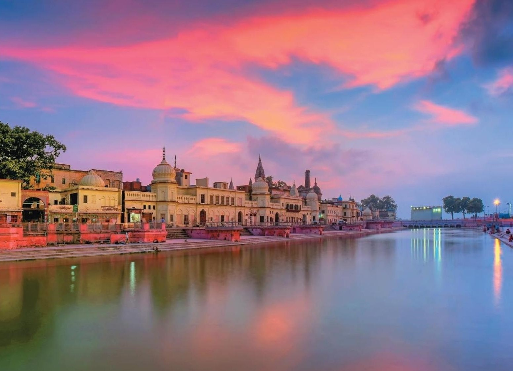
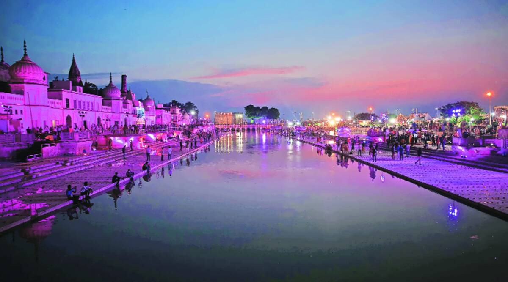
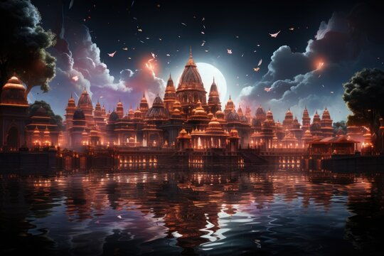
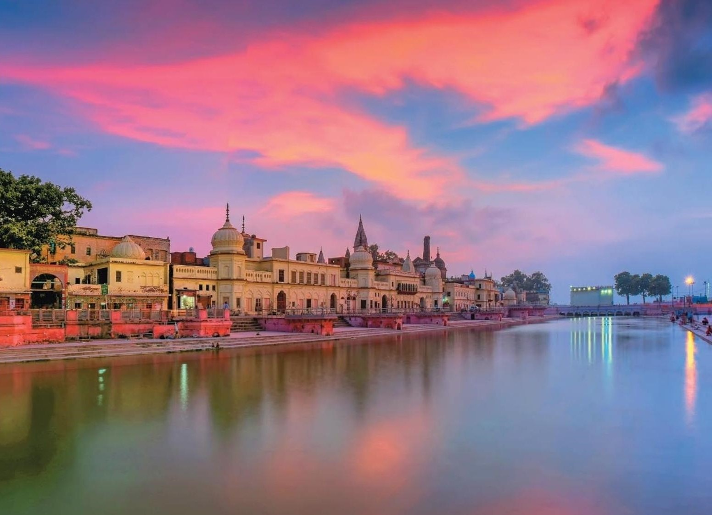
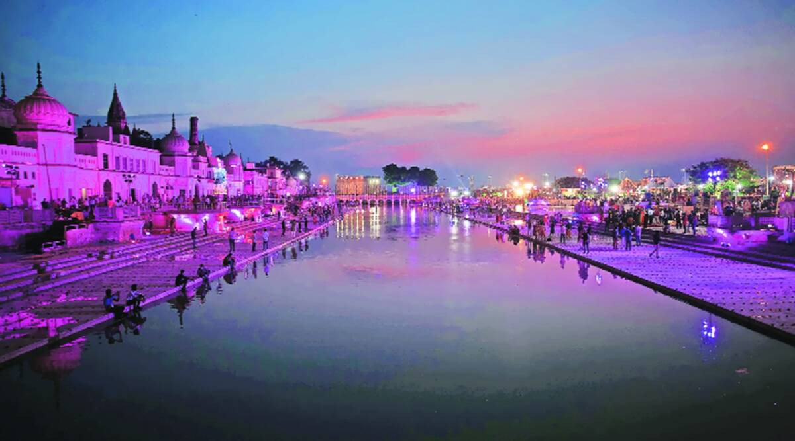
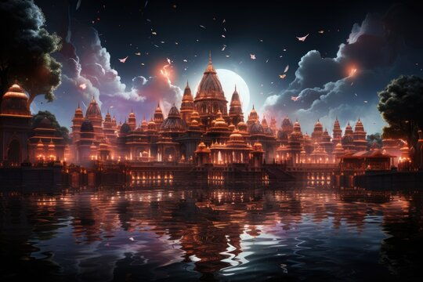

2024
As of 2024, Ayodhya's timeline reflects continued efforts towards the construction of the Ram Mandir. Following the Supreme Court's verdict in favor of the temple's construction in 2019, ongoing work includes architectural planning, fundraising, and construction activities. The city remains a hub of religious pilgrimage and cultural celebrations, with events such as Ram Navami and Diwali attracting devotees. Additionally, initiatives to enhance infrastructure and tourism facilities are underway to accommodate the increasing influx of visitors. Ayodhya continues to hold profound significance in Hindu mythology and remains at the forefront of India's cultural and religious landscape.
2023
In 2023, Ayodhya experienced a significant milestone with the inauguration of the Ram Mandir, marking the culmination of decades-long legal and religious disputes. The grand ceremony drew millions of devotees and dignitaries from across the nation, symbolizing the fulfillment of a longstanding Hindu aspiration. The event was accompanied by elaborate rituals, religious processions, and cultural festivities, signifying Ayodhya's renewed status as a spiritual center. Amidst the celebrations, the city also witnessed ongoing efforts for cultural preservation and tourism development, aiming to showcase its rich heritage to visitors worldwide. The year marked a historic moment in Ayodhya's legacy, resonating deeply with believers and observers alike.
2017
In 2017, Ayodhya witnessed continued legal proceedings and discussions surrounding the Ram Mandir-Babri Masjid dispute, with the Supreme Court suggesting mediation for resolution. Hindu organizations, including the Vishwa Hindu Parishad, held rallies advocating for the construction of the Ram Mandir, culminating in the 'Dharma Sabha' in September. Routine religious ceremonies persisted, with festivals like Diwali celebrated fervently. However, no significant breakthroughs occurred in the dispute resolution. The city maintained its cultural vibrancy with ongoing pilgrimages and preparations for religious events like Ram Navami. Despite ongoing tensions, Ayodhya remained a focal point of religious and legal deliberations throughout the year.
2016
In 2016, Ayodhya remained entangled in the Ram Mandir-Babri Masjid dispute, with legal proceedings continuing in the Supreme Court of India. Various Hindu organizations intensified their calls for the construction of the Ram Mandir, organizing rallies and meetings to rally support. Efforts for an out-of-court settlement gained traction, with the Supreme Court urging parties to explore mediation. Routine religious ceremonies and pilgrimages characterized the city's ambiance, contributing to its spiritual significance. However, amidst ongoing discussions and legal battles, a resolution to the longstanding dispute remained elusive. Ayodhya remained a symbol of religious and cultural significance, drawing attention both nationally and internationally.


 




